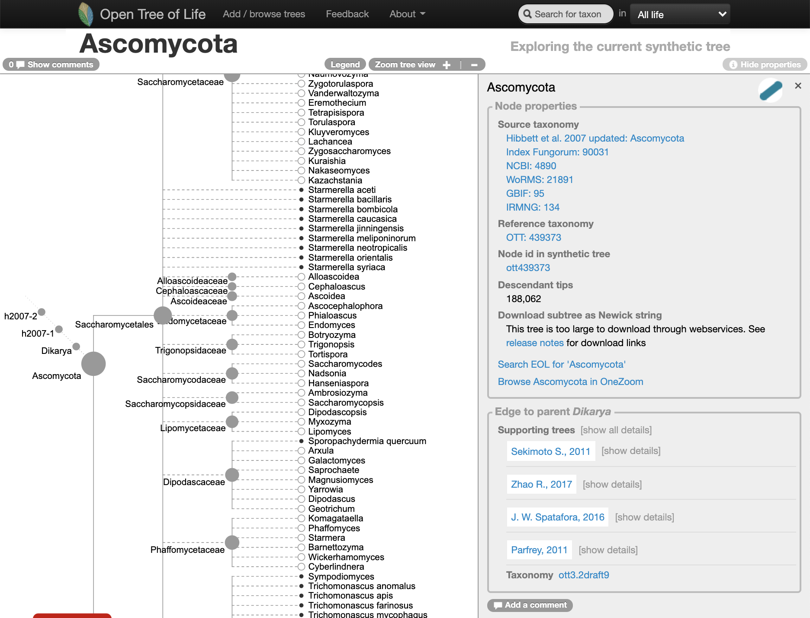
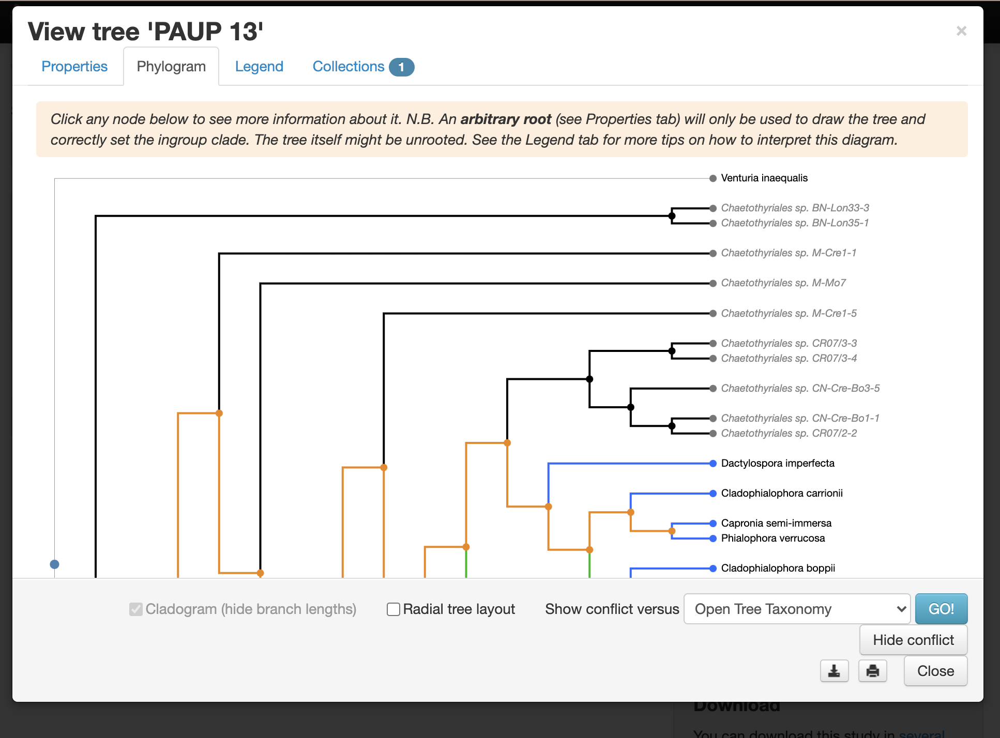
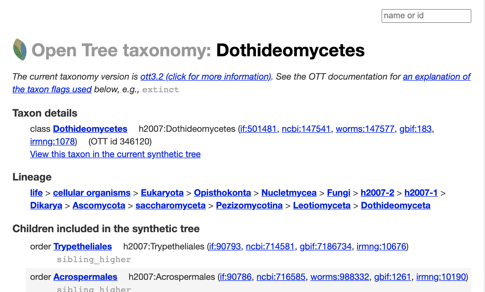
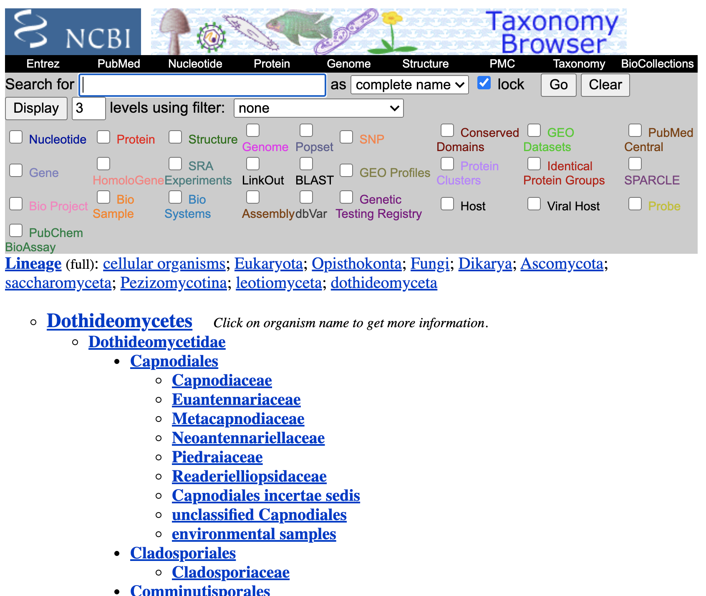
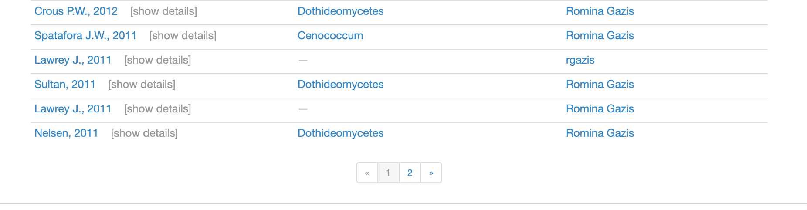
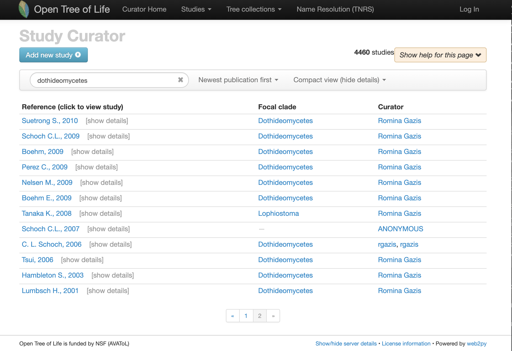

Physcraper Examples: the Dothideomycetes
schoch.Rmd#> Warning: package 'DT' was built under R version 3.6.2I. Finding a tree to update
With the Open Tree of Life website
Go to the Open Tree of Life website and use the “search for taxon” menu to look up the taxon Dothideomycetes.
Oh no… it seems like the Dothideomycetes are not represented as a clade on the Open Tree of Life synthetic tree (at the middle of year 2020):
Go to the website and look at it here
What is the MRCA of the “broken” Dothideomycetes in the synthetic tree? follow the “View the MRCA of the members of this taxon in the synthetic tree” link.

It is the Ascomycota, which has more than 1.5k species.
It is time now to ask the question, do we want to update an alignment for all the Ascomycota???
Why are the Dothideomycetes “broken”?
go to the “Show this tree’s conflicts in the study curation tool” link.

There is a published tree that is conflicting with the taxonomy.
Let’s get more information about the taxonomy of the Dothideomycetes, follow the “View this taxon in the taxonomy browser” link.

So, it seems like it is a taxon in NCBI. To verify this, go to the section “Taxon details”, and follow the ncbi:147541 link.

Maybe we can just enrich that part of the tree on the updating step.
Let’s verify that on the study curator of OToL.
Studies matching the word ‘dothideomycetes’ on the curator database, at the middle of year 2020. Some of these studies are not actually about this taxon.

Finding a tree to update using the R package rotl
Explain what a focal clade is.
There is a handy function that will search a taxon among the focal clades reported across trees.
It seems like the tree tree137 from study pg_254, is not in the Open Tree of Life synthetic tree.
Let’s get it and plot it here:
schoch2009 <- rotl::get_study_tree(study_id = "pg_254", tree_id = "tree137")
ape::plot.phylo(ape::ladderize(schoch2009), type = "phylogram", cex = 0.3, label.offset = 1, edge.width = 0.5)
The alignment is here https://treebase.org/treebase-web/search/study/matrices.html?id=10245.
wget "http://purl.org/phylo/treebase/phylows/matrix/TB2:M4727?format=nexus" mv TB2:M4727?format=nexus data-raw/alignments/T6859-M4727.nexAscomycota
asco <- rotl::studies_find_studies(property="ot:focalCladeOTTTaxonName", value="Ascomycota")
datatable(asco, class = 'order-column hover compact row-border', options = list(dom = 't'), rownames = FALSE, editable = FALSE)| study_ids | n_trees | tree_ids | candidate | study_year | title | study_doi |
|---|---|---|---|---|---|---|
| pg_1682 | 5 | tree3388, tree3389, tree3391, tree3392, tree5491 | tree5491 | 1999 | Molecular phylogeny of the cleistothecial fungi placed in Cephalothecaceae and Pseudeurotiaceae | http://dx.doi.org/10.2307/3761537 |
| pg_854 | 2 | tree1646, tree1647 | 2009 | Phylogeny and taxonomy of obscure genera of microfungi | http://dx.doi.org/10.3767/003158509X461701 | |
| ot_1421 | 3 | tree1, tree2, tree3 | 2016 | ‘Novel fungi from an ancient niche: cercosporoid and related sexual morphs on ferns’ | http://dx.doi.org/10.3767/003158516x690934 | |
| pg_831 | 8 | tree1597, tree1598, tree1599, tree1600, tree5682, … | 2008 | Phylogenetic diversity of fungi from the deep-sea sediments of the Central Indian Basin and their growth characteristics | http://dx.doi.org/10.1007/s13225-009-0009-5 | |
| pg_238 | 1 | tree109 | 2009 | http://dx.doi.org/10.1093/sysbio/syp020 | ||
| pg_875 | 1 | tree1682 | 2002 | Higher level phylogenetic relationships of Euascomycetes (Pezizomycotina) inferred from a combined analysis of nuclear and mitochondrial sequence data | http://dx.doi.org/10.1007/s11557-006-0005-z | |
| pg_845 | 1 | tree1625 | 2008 | Foliicolous microfungi occurring on Encephalartos | http://dx.doi.org/10.3767/003158508X380612 | |
| pg_1733 | 1 | tree3485 | 2001 | Two pantropical Ascomycetes: Chaetosphaeria cylindrospora sp | http://dx.doi.org/10.2307/3761669 | |
| pg_2226 | 2 | tree4705, tree4706 | 2002 | New genes for phylogenetic studies of lichenized fungi: glyceraldehyde-3-phosphate dehydrogenase and beta-tubulin genes | http://dx.doi.org/10.1006/lich.2002.0390 | |
| ot_239 | 1 | Tr6287 | 2009 | Multiple origins of symbioses between ascomycetes and bryophytes suggested by a five-gene phylogeny | http://dx.doi.org/10.1111/j.1096-0031.2009.00299.x | |
| pg_1080 | 1 | tree2103 | 2012 | Culture-free survey reveals diverse and distinctive fungal communities associated with developing figs (Ficus spp | http://dx.doi.org/10.1007/s00248-012-0079-x | |
| pg_2442 | 5 | tree5182, tree5183, tree5184, tree5185, tree6009 | 2011 | Molecular phylogeny of two coelomycetous genera with star-shaped conidia, Prosthemium and Asterosporium on Fagales tree | http://dx.doi.org/10.1139/B10-078 | |
| ot_471 | 5 | Tr88710, Tr88708, Tr88709, Tr88706, Tr88707 | Tr88706 | 2015 | The Genera of Fungi - fixing the application of the type species of generic names ? G 2: Allantophomopsis, Latorua, Macrodiplodiopsis, Macrohilum, Milospium, Protostegia, Pyricularia, Robillarda, Rotula, Septoriella, Torula, and Wojnowicia | http://dx.doi.org/10.5598/imafungus.2015.06.01.11 |
| ot_351 | 1 | Tr53295 | Tr53295 | 2012 | Fungal Planet description sheets: 107?127 | http://dx.doi.org/10.3767/003158512X652633 |
| pg_2392 | 2 | tree5032, tree5033 | 2011 | Interkingdom gene transfer of a hybrid NPS/PKS from bacteria to filamentous Ascomycota | http://dx.doi.org/10.1371/journal.pone.0028231 | |
| pg_736 | 1 | tree1330 | 2001 | Phylogenetic analysis of nuclear and mitochondrial rDNA sequences supports that loculoascomycetes are not monophyletic | http://dx.doi.org/10.1016/S0953-7562(08)61988-7 | |
| pg_1059 | 2 | tree2038, tree5775 | 2010 | Species richness analysis and ITS rDNA phylogeny revealed the majority of cultivable foliar endophytes from beech (Fagus sylvatica L | http://dx.doi.org/10.1016/j.funeco.2010.03.001 | |
| pg_1196 | 3 | tree2414, tree2415, tree2416 | 2011 | http://dx.doi.org/10.3767/003158511X574532 | ||
| pg_1198 | 1 | tree2419 | 2011 | Fungal Planet description sheets: 69–91 | http://dx.doi.org/10.3767/003158511X581723 | |
| pg_2225 | 2 | tree4704, tree5949 | 2001 | The phylogeny of plant and animal pathogens in the Ascomycota | http://dx.doi.org/10.1006/pmpp.2001.0355 | |
| pg_2224 | 1 | tree4703 | 2000 | "Fungal molecular evolution: gene trees and geologic time | ||
| pg_2223 | 1 | tree4702 | 2000 | Evolution of Filamentous Ascomycetes Inferred from LSU rDNA Sequence Data | http://dx.doi.org/10.1055/s-2000-7472 | |
| pg_1037 | 1 | tree1990 | 2010 | Phylogenetic analysis of ascomycete yeasts that form coenzyme Q-9 and the proposal of the new genera Babjeviella, Meyerozyma, Millerozyma, Priceomyces, and Scheffersomyces | http://dx.doi.org/10.1007/s10267-009-0011-5 | |
| ot_424 | 4 | Tr75536, Tr68229, Tr68227, Tr68230 | Tr68230 | 2014 | ’Fodinomyces uranophilus gen. nov. sp. nov. and Coniochaeta fodinicola sp. nov. | http://dx.doi.org/10.3852/14-013 |
| pg_1201 | 1 | tree2423 | 2012 | Fungal Planet description sheets: 107-127 | http://dx.doi.org/10.3767/003158512X652633 | |
| pg_862 | 1 | tree1657 | 2010 | Coniochaeta (Lecythophora), Collophora gen | http://dx.doi.org/10.3767/003158510X500705 | |
| pg_863 | 2 | tree1658, tree1659 | 2010 | Microcyclospora and Microcyclosporella: novel genera accommodating epiphytic fungi causing sooty blotch on apple | http://dx.doi.org/10.3767/003158510X510560 | |
| pg_2245 | 1 | tree4759 | 2005 | |||
| ot_1616 | 1 | tree1 | 2018 | ‘Two new classes of Ascomycota: Xylobotryomycetes and Candelariomycetes’ | http://dx.doi.org/10.3767/persoonia.2019.42.02 |
It seems like the tree tree109 from study pg_238, is not in the Open Tree of Life synthetic tree.
Ascomycota alignments here https://treebase.org/treebase-web/search/study/matrices.html?id=2137.
wget "http://purl.org/phylo/treebase/phylows/matrix/TB2:M3939?format=nexus"
mv TB2:M3939?format=nexus data-raw/alignments/Tr5276-M3939.nex
wget "http://purl.org/phylo/treebase/phylows/matrix/TB2:M3938?format=nexus"
mv TB2:M3938?format=nexus data-raw/alignments/Tr5276-M3938.nex
wget "http://purl.org/phylo/treebase/phylows/matrix/TB2:M3802?format=nexus"
mv TB2:M3802?format=nexus data-raw/alignments/Tr5276-M3802.nex
wget "http://purl.org/phylo/treebase/phylows/matrix/TB2:M3956?format=nexus"
mv TB2:M3956?format=nexus data-raw/alignments/Tr5276-M3956.nexDownloading them with physcraper
physcraper_run.py -s pg_238 -t tree109 -tb -no_est -o ../physcraperex/data/schoch_ascomycota_0_2020.06.06